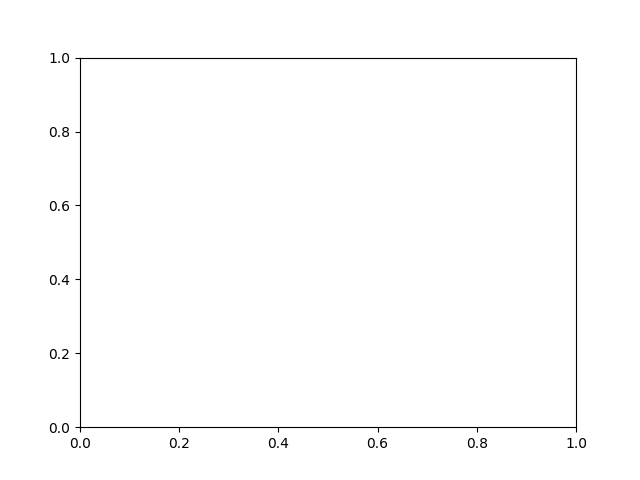
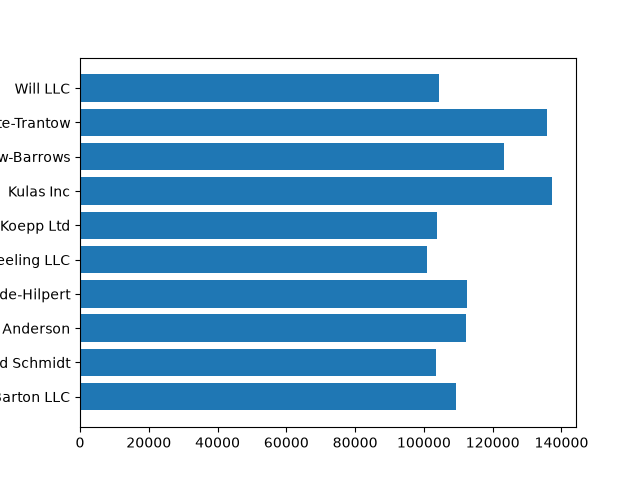
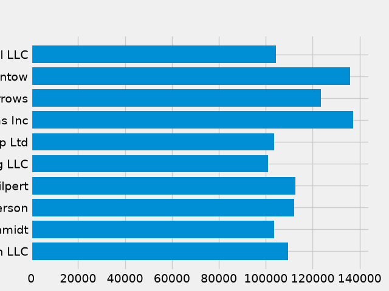
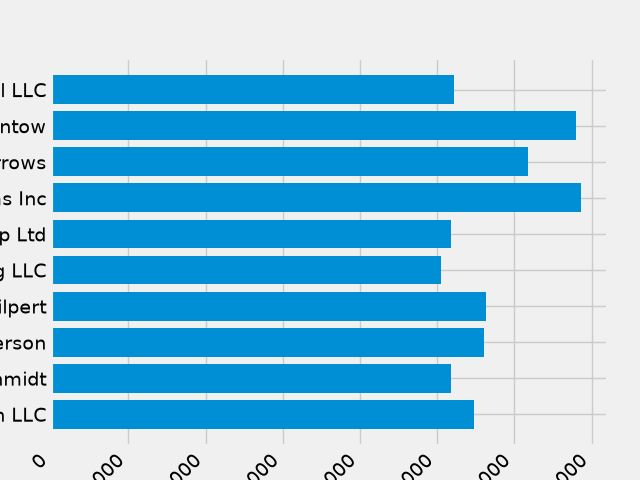
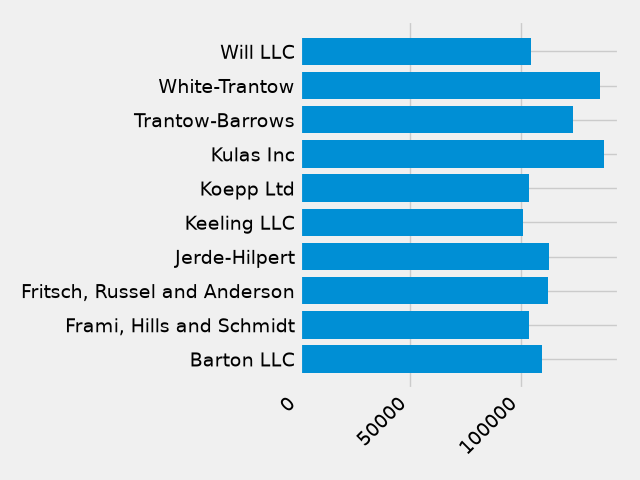
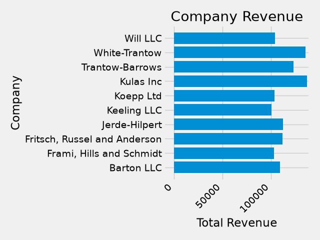
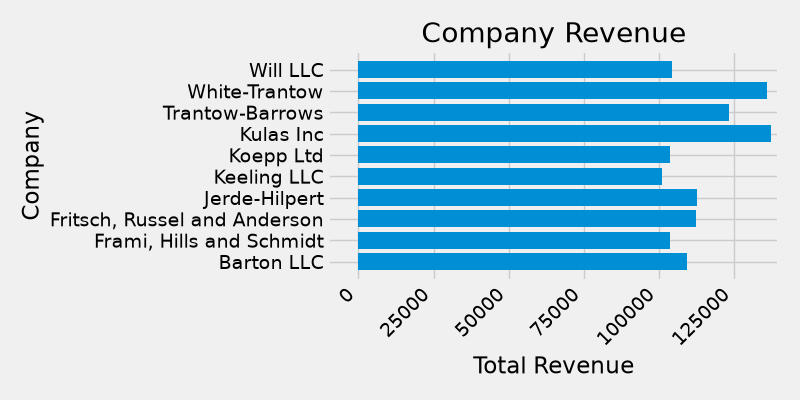
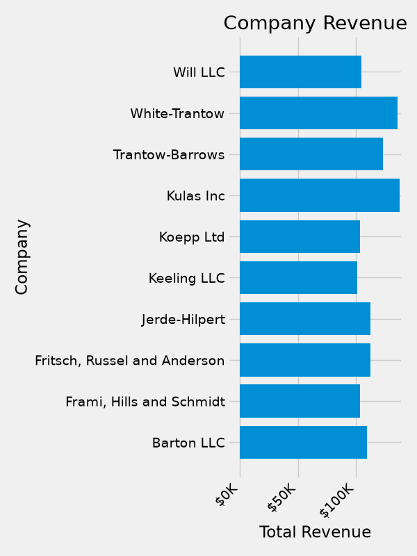
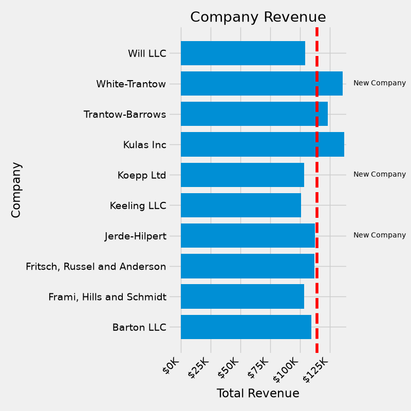

Note
Go to the end to download the full example code.
The Lifecycle of a Plot#
This tutorial aims to show the beginning, middle, and end of a single visualization using Matplotlib. We'll begin with some raw data and end by saving a figure of a customized visualization. Along the way we try to highlight some neat features and best-practices using Matplotlib.
Note
This tutorial is based on this excellent blog post by Chris Moffitt. It was transformed into this tutorial by Chris Holdgraf.
Our data#
We'll use the data from the post from which this tutorial was derived. It contains sales information for a number of companies.
import matplotlib.pyplot as plt
import numpy as np
data = {'Barton LLC': 109438.50,
'Frami, Hills and Schmidt': 103569.59,
'Fritsch, Russel and Anderson': 112214.71,
'Jerde-Hilpert': 112591.43,
'Keeling LLC': 100934.30,
'Koepp Ltd': 103660.54,
'Kulas Inc': 137351.96,
'Trantow-Barrows': 123381.38,
'White-Trantow': 135841.99,
'Will LLC': 104437.60}
group_data = list(data.values())
group_names = list(data.keys())
group_mean = np.mean(group_data)
Getting started#
This data is naturally visualized as a barplot, with one bar per
group. To do this with the object-oriented approach, we first generate
an instance of figure.Figure and
axes.Axes. The Figure is like a canvas, and the Axes
is a part of that canvas on which we will make a particular visualization.
Note
Figures can have multiple Axes on them. For information on how to do this, see the Tight Layout tutorial.
fig, ax = plt.subplots()

Now that we have an Axes instance, we can plot on top of it.
fig, ax = plt.subplots()
ax.barh(group_names, group_data)

Controlling the style#
There are many styles available in Matplotlib in order to let you tailor
your visualization to your needs. To see a list of styles, we can use
style.
print(plt.style.available)
['Solarize_Light2', 'bmh', 'classic', 'dark_background', 'fast', 'fivethirtyeight', 'ggplot', 'grayscale', 'petroff10', 'petroff6', 'petroff8', 'seaborn-v0_8', 'seaborn-v0_8-bright', 'seaborn-v0_8-colorblind', 'seaborn-v0_8-dark', 'seaborn-v0_8-dark-palette', 'seaborn-v0_8-darkgrid', 'seaborn-v0_8-deep', 'seaborn-v0_8-muted', 'seaborn-v0_8-notebook', 'seaborn-v0_8-paper', 'seaborn-v0_8-pastel', 'seaborn-v0_8-poster', 'seaborn-v0_8-talk', 'seaborn-v0_8-ticks', 'seaborn-v0_8-white', 'seaborn-v0_8-whitegrid', 'tableau-colorblind10']
You can activate a style with the following:
plt.style.use('fivethirtyeight')
Now let's remake the above plot to see how it looks:
fig, ax = plt.subplots()
ax.barh(group_names, group_data)

The style controls many things, such as color, linewidths, backgrounds, etc.
Customizing the plot#
Now we've got a plot with the general look that we want, so let's fine-tune
it so that it's ready for print. First let's rotate the labels on the x-axis
so that they show up more clearly. We can gain access to these labels
with the axes.Axes.get_xticklabels() method:
fig, ax = plt.subplots()
ax.barh(group_names, group_data)
labels = ax.get_xticklabels()

If we'd like to set the property of many items at once, it's useful to use
the pyplot.setp() function. This will take a list (or many lists) of
Matplotlib objects, and attempt to set some style element of each one.
fig, ax = plt.subplots()
ax.barh(group_names, group_data)
labels = ax.get_xticklabels()
plt.setp(labels, rotation=45, horizontalalignment='right')

It looks like this cut off some of the labels on the bottom. We can
tell Matplotlib to automatically make room for elements in the figures
that we create. To do this we set the autolayout value of our
rcParams. For more information on controlling the style, layout, and
other features of plots with rcParams, see
Customizing Matplotlib with style sheets and rcParams.
plt.rcParams.update({'figure.autolayout': True})
fig, ax = plt.subplots()
ax.barh(group_names, group_data)
labels = ax.get_xticklabels()
plt.setp(labels, rotation=45, horizontalalignment='right')

Next, we add labels to the plot. To do this with the OO interface,
we can use the Artist.set() method to set properties of this
Axes object.
fig, ax = plt.subplots()
ax.barh(group_names, group_data)
labels = ax.get_xticklabels()
plt.setp(labels, rotation=45, horizontalalignment='right')
ax.set(xlim=(-10000, 140000), xlabel='Total Revenue', ylabel='Company',
title='Company Revenue')

We can also adjust the size of this plot using the pyplot.subplots()
function. We can do this with the figsize keyword argument.
Note
While indexing in NumPy follows the form (row, column), the figsize keyword argument follows the form (width, height). This follows conventions in visualization, which unfortunately are different from those of linear algebra.
fig, ax = plt.subplots(figsize=(8, 4))
ax.barh(group_names, group_data)
labels = ax.get_xticklabels()
plt.setp(labels, rotation=45, horizontalalignment='right')
ax.set(xlim=(-10000, 140000), xlabel='Total Revenue', ylabel='Company',
title='Company Revenue')

For labels, we can specify custom formatting guidelines in the form of
functions. Below we define a function that takes an integer as input, and
returns a string as an output. When used with Axis.set_major_formatter or
Axis.set_minor_formatter, they will automatically create and use a
ticker.FuncFormatter class.
For this function, the x argument is the original tick label and pos
is the tick position. We will only use x here but both arguments are
needed.
def currency(x, pos):
"""The two arguments are the value and tick position"""
if x >= 1e6:
s = f'${x*1e-6:1.1f}M'
else:
s = f'${x*1e-3:1.0f}K'
return s
We can then apply this function to the labels on our plot. To do this,
we use the xaxis attribute of our Axes. This lets you perform
actions on a specific axis on our plot.
fig, ax = plt.subplots(figsize=(6, 8))
ax.barh(group_names, group_data)
labels = ax.get_xticklabels()
plt.setp(labels, rotation=45, horizontalalignment='right')
ax.set(xlim=(-10000, 140000), xlabel='Total Revenue', ylabel='Company',
title='Company Revenue')
ax.xaxis.set_major_formatter(currency)

Combining multiple visualizations#
It is possible to draw multiple plot elements on the same instance of
axes.Axes. To do this we simply need to call another one of
the plot methods on that Axes object.
fig, ax = plt.subplots(figsize=(8, 8))
ax.barh(group_names, group_data)
labels = ax.get_xticklabels()
plt.setp(labels, rotation=45, horizontalalignment='right')
# Add a vertical line, here we set the style in the function call
ax.axvline(group_mean, ls='--', color='r')
# Annotate new companies
for group in [3, 5, 8]:
ax.text(145000, group, "New Company", fontsize=10,
verticalalignment="center")
# Now we move our title up since it's getting a little cramped
ax.title.set(y=1.05)
ax.set(xlim=(-10000, 140000), xlabel='Total Revenue', ylabel='Company',
title='Company Revenue')
ax.xaxis.set_major_formatter(currency)
ax.set_xticks([0, 25e3, 50e3, 75e3, 100e3, 125e3])
fig.subplots_adjust(right=.1)
plt.show()

Saving our plot#
Now that we're happy with the outcome of our plot, we want to save it to disk. There are many file formats we can save to in Matplotlib. To see a list of available options, use:
print(fig.canvas.get_supported_filetypes())
{'eps': 'Encapsulated Postscript', 'gif': 'Graphics Interchange Format', 'jpg': 'Joint Photographic Experts Group', 'jpeg': 'Joint Photographic Experts Group', 'pdf': 'Portable Document Format', 'pgf': 'PGF code for LaTeX', 'png': 'Portable Network Graphics', 'ps': 'Postscript', 'raw': 'Raw RGBA bitmap', 'rgba': 'Raw RGBA bitmap', 'svg': 'Scalable Vector Graphics', 'svgz': 'Scalable Vector Graphics', 'tif': 'Tagged Image File Format', 'tiff': 'Tagged Image File Format', 'webp': 'WebP Image Format', 'avif': 'AV1 Image File Format'}
We can then use the figure.Figure.savefig() in order to save the figure
to disk. Note that there are several useful flags we show below:
transparent=Truemakes the background of the saved figure transparent if the format supports it.dpi=80controls the resolution (dots per square inch) of the output.bbox_inches="tight"fits the bounds of the figure to our plot.
# Uncomment this line to save the figure.
# fig.savefig('sales.png', transparent=False, dpi=80, bbox_inches="tight")
Total running time of the script: (0 minutes 4.612 seconds)